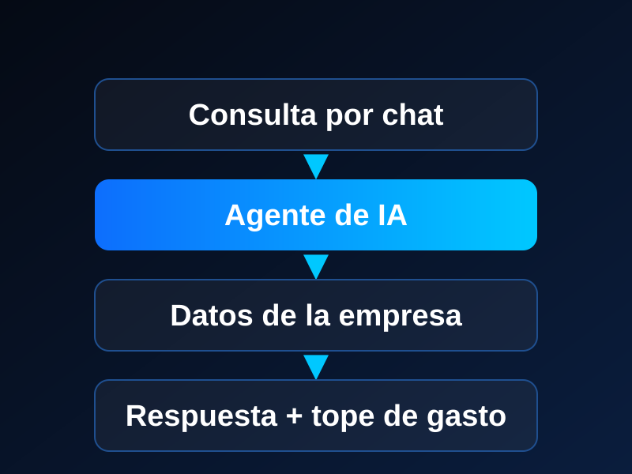
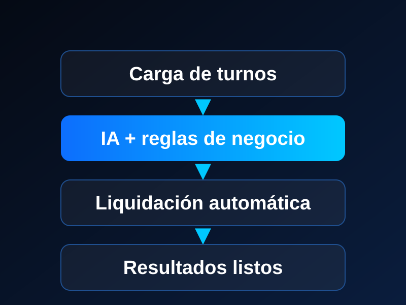
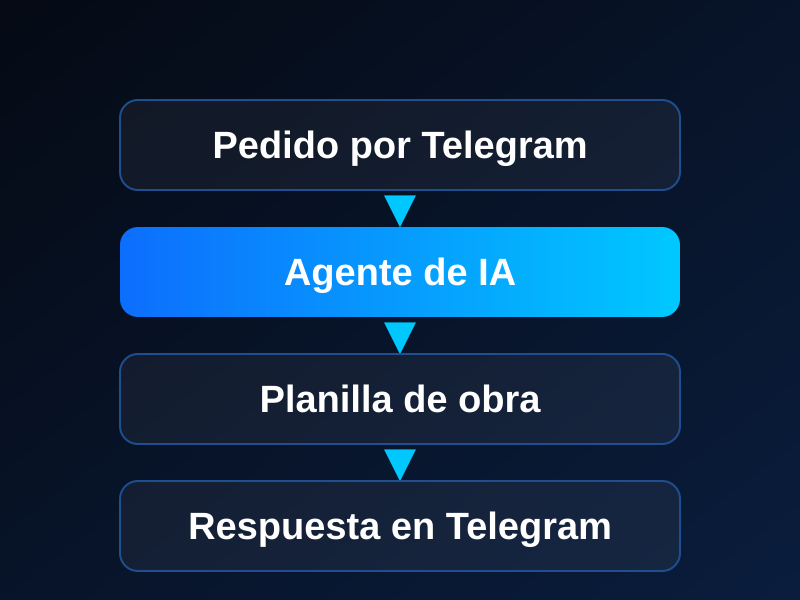
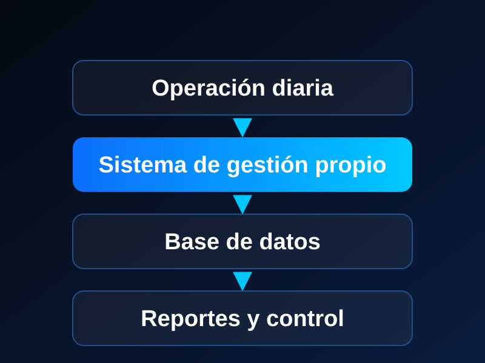

Llevamos la IA a la operación diaria de tu empresa para |
Asesoramos a PYMEs para optimizar sus circuitos de trabajo con inteligencia artificial: asistentes, automatizaciones y reportes que funcionan solos. Desde Bariloche, de forma presencial o remota. Mirá lo que construimos.
Trabajamos con las herramientas líderes del mercado
Nuestros Servicios
Asistentes con IA
Un agente que responde consultas, carga datos y busca información por vos, desde Telegram o la web.
Automatización de procesos
Conectamos tus herramientas para que las tareas repetitivas se hagan solas, con controles y avisos.
Dashboards y reportes
Paneles interactivos de tu negocio, listos para consultar sin armar planillas a mano.
Sistemas a medida
Programación y bases de datos con más de 30 años de oficio, para lo que no se resuelve con una herramienta estándar.
Cómo trabajamos
Un proceso simple y efectivo para transformar tu negocio con datos
Diagnóstico
Analizamos tus procesos actuales e identificamos las oportunidades de mejora con mayor impacto en tu negocio.
Implementación
Desarrollamos la solución a medida: dashboard en Power BI, automatización con n8n o modelo de IA integrado.
Resultados
Medimos el impacto real, capacitamos a tu equipo y acompañamos el crecimiento sostenido de tu empresa.
Lo que construimos
Casos reales, presentados sin datos sensibles. En nuestras implementaciones, una vez en marcha, las horas de trabajo manual se reducen aproximadamente a la mitad.

Asistente de IA para gestión multirrubro
Una empresa multirubro (construcción, alquileres y salud) consulta su información en lenguaje normal, sin buscar en planillas. El asistente aprende con cada desafío y avisa antes de superar un tope de gasto diario. En uso real hace 5 meses.

Turnos y liquidaciones de consultorios
La gestión de turnos con pacientes y la liquidación a profesionales se hacía a mano. Una interfaz con IA permite cargar los datos y el sistema hace el resto.

Pedidos por Telegram para una constructora
La información de obra se pedía y se cargaba manualmente. Ahora una planilla de carga está conectada a un agente de IA al que se le piden datos desde Telegram.

Sistema de gestión para courier
Una solución desarrollada desde 1999 que sigue en producción hoy. Está en proceso de renovación para ofrecerla a otros couriers.
Quiénes somos
Mi primer trabajo con computadoras fue en 1989. Aprendí solo, programando en dBase III Plus, y desde entonces no paré: me recibí de Analista de Sistemas en 1996 y en 1999 armé desde cero el departamento de sistemas de un courier, con un sistema de gestión propio que sigue funcionando hoy.
Después de más de 30 años entre sistemas, bases de datos y planillas, veo la IA como la herramienta más potente que tuvo un perfil técnico: saca la parte tediosa de programar y deja tiempo para resolver problemas reales.
Nací en Lomas de Zamora y desde 2017 vivo en Bariloche. Trabajo con empresas de cualquier lugar: presencial si estás en la ciudad, remoto si no.
DSI es una consultora de una sola persona. Hablás conmigo directamente, sin intermediarios.
Conocer mi trayectoria en LinkedInSoluciones por rubro
Cada rubro tiene sus propios problemas. Estos son los que ya conocemos de cerca.
Consultorios de salud
Turnos y liquidación a profesionales con IA, con la atención siempre en manos de personas.
Ver soluciónConstructoras y alquileres
Pedidos y consultas de obra por Telegram, conectados a un agente de IA.
Ver soluciónPreguntas Frecuentes
Recursos y Guías
Qué es un agente de IA y cuándo le sirve a una PYME
Cómo funciona, en qué tareas ayuda, cuándo no conviene y qué controles necesita.
Leer másQué procesos conviene automatizar con IA
Cinco preguntas para decidir por dónde empezar y cómo medir si valió la pena.
Ver la guíaFlujos de Trabajo Inteligentes: Beneficios
Ventajas de integrar automatización y análisis para escalar sin aumentar costos operativos.
Descubrir más